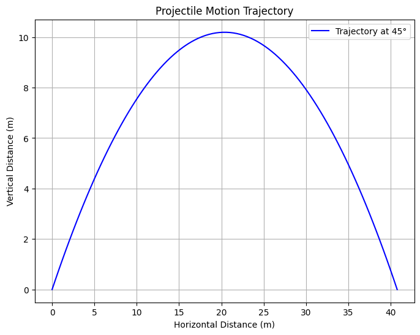
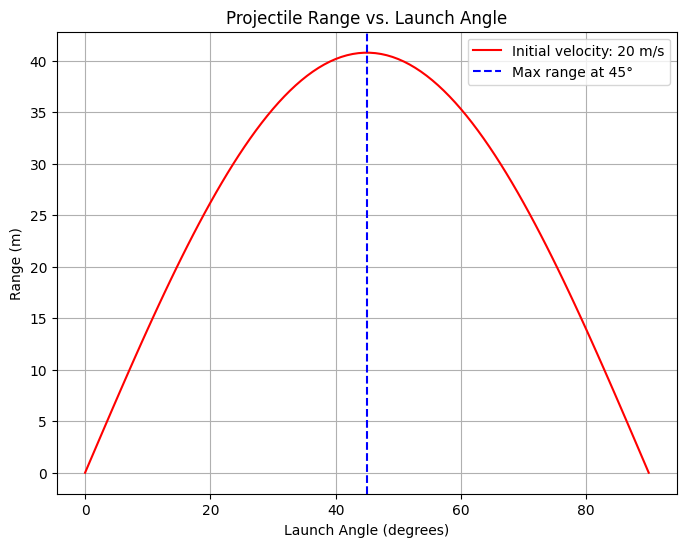

Problem 1
Here's a detailed explanation of projectile motion, including its governing equations, derivations, and graphical representations.
Projectile Motion: Theory and Analysis
1. Introduction
Projectile motion refers to the motion of an object that is launched into the air and moves under the influence of gravity alone, assuming air resistance is negligible. It is a fundamental concept in physics with applications in sports, engineering, and astrophysics.
The motion of the projectile can be broken down into horizontal (x-direction) and vertical (y-direction) components, each governed by Newton's laws of motion.
2. Equations of Motion
2.1 Assumptions
- The projectile is launched from an initial height \( y_0 = 0 \).
- Air resistance is neglected.
- The acceleration due to gravity (\( g \)) is constant and acts downward.
- The initial velocity \( v_0 \) is at an angle \( \theta \) with the horizontal axis.
2.2 Decomposing Initial Velocity
The initial velocity \( v_0 \) is split into horizontal and vertical components: $$ v_{0x} = v_0 \cos\theta $$ $$ v_{0y} = v_0 \sin\theta $$
3. Horizontal Motion
Since there is no horizontal acceleration (neglecting air resistance), the horizontal displacement \( x \) after time \( t \) is given by:
The horizontal velocity remains constant:
4. Vertical Motion
The vertical motion is influenced by gravity. Using kinematic equations:
The vertical velocity at time \( t \) is:
The projectile reaches its maximum height when \( v_y = 0 \), which occurs at:
The maximum height (\( H \)) is given by:
5. Time of Flight
The total time the projectile spends in the air is found by setting \( y = 0 \) in the vertical displacement equation:
Solving for \( t \):
6. Range of the Projectile
The range \( R \) is the total horizontal distance traveled before the projectile lands:
Substituting \( v_{0x} = v_0 \cos\theta \) and the total time of flight:
Using the trigonometric identity \( 2\sin\theta\cos\theta = \sin(2\theta) \):
The maximum range occurs when \( \theta = 45^\circ \), giving:
7. Graphical Representation
Let's visualize how the range varies with launch angle.
 
Python Code for Simulation
This script plots:
- The trajectory of a projectile.
- The range as a function of launch angle.
import numpy as np
import matplotlib.pyplot as plt
# Constants
g = 9.81 # Gravity (m/s^2)
v0 = 20 # Initial velocity (m/s)
angles = np.linspace(0, 90, 100) # Launch angles from 0 to 90 degrees
# Function to compute projectile range
def projectile_range(theta, v0, g=9.81):
theta_rad = np.radians(theta)
return (v0**2 * np.sin(2 * theta_rad)) / g
# Compute ranges for different angles
ranges = [projectile_range(theta, v0) for theta in angles]
# Trajectory Simulation for a specific angle (e.g., 45°)
theta_trajectory = 45 # Change this to see different angles
t_flight = (2 * v0 * np.sin(np.radians(theta_trajectory))) / g
t = np.linspace(0, t_flight, num=100)
x = v0 * np.cos(np.radians(theta_trajectory)) * t
y = v0 * np.sin(np.radians(theta_trajectory)) * t - 0.5 * g * t**2
# Plot 1: Projectile Trajectory
plt.figure(figsize=(8, 6))
plt.plot(x, y, label=f'Trajectory at {theta_trajectory}°', color='b')
plt.xlabel('Horizontal Distance (m)')
plt.ylabel('Vertical Distance (m)')
plt.title('Projectile Motion Trajectory')
plt.legend()
plt.grid()
plt.show()
# Plot 2: Range vs Angle
plt.figure(figsize=(8, 6))
plt.plot(angles, ranges, label=f'Initial velocity: {v0} m/s', color='r')
plt.axvline(45, linestyle="--", color="b", label="Max range at 45°")
plt.xlabel('Launch Angle (degrees)')
plt.ylabel('Range (m)')
plt.title('Projectile Range vs. Launch Angle')
plt.legend()
plt.grid()
plt.show()
Graph Analysis
- Trajectory Plot: Shows the parabolic path followed by the projectile.
- Range vs. Angle: Demonstrates that the range is maximized at \( 45^\circ \).
8. Practical Applications
- Sports – Optimizing the angle for maximum distance in javelin throws, soccer kicks, or basketball shots.
- Military – Calculating projectile trajectories for artillery and missiles.
- Engineering – Predicting motion paths in robotics and mechanical systems.
- Astrophysics – Understanding planetary orbits and space vehicle trajectories.
9. Extensions
To make the model more realistic, we can: - Introduce air resistance using drag force proportional to velocity. - Consider uneven terrain, where the landing height differs from the launch height. - Include wind effects, adding a horizontal acceleration component.
10. Conclusion
Projectile motion is a fundamental concept with rich mathematical structures and numerous applications. By understanding its governing equations, we can predict and optimize trajectories in various real-world scenarios.